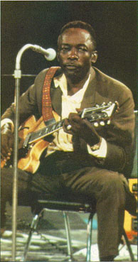

John Lee Hooker: блюзовый Будда. Статья Сергея Козловского и Александра Петрова. Перепечатано из Музыкальной Газеты.
Blow Up - три отзыва об альбоме John Lee Hooker "Don't Look Back". Перепечатано из журнала Jazz-квадрат.
Boogie Chillen (359k)